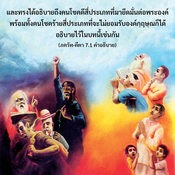

บุคลิกภาพสูงสุดแห่งพระเจ้าตรัสว่า โอ้ โอรสพระนาง ปฺฤถา บัดนี้เธอจงฟังว่าปฏิบัติโยคะด้วยจิตสำนึกที่สมบูรณ์ในข้า และด้วยจิตยึดมั่นต่อข้า เธอจึงจะสามารถรู้ถึงข้าโดยสมบูรณ์ ปราศจากความสงสัย

บทที่เจ็ดของ ภควัท-คีตา นี้อธิบายถึงธรรมชาติของกฺฤษฺณจิตสำนึกอย่างสมบูรณ์ องค์กฺฤษฺณทรงเปี่ยมไปด้วยความมั่งคั่งทั้งหมด วิธีที่พระองค์ทรงแสดงถึงความมั่งคั่งเหล่านี้ให้เราเห็นได้อธิบายไว้ตรงนี้ และทรงได้อธิบายถึงคนโชคดีสี่ประเภทที่มายึดมั่นต่อพระองค์ พร้อมทั้งคนโชคร้ายสี่ประเภทที่จะไม่ยอมรับองค์กฺฤษฺณได้อธิบายไว้ในบทนี้เช่นกัน
หกบทแรกของ ภควัท-คีตา ได้อธิบายว่าสิ่งมีชีวิตเป็นดวงวิญญาณ ไม่ใช่วัตถุ และดวงวิญญาณสามารถพัฒนาตนเองให้มาถึงความรู้แจ้งแห่งตนด้วยวิธีโยคะต่างๆ ในตอนท้ายของบทที่หกได้กล่าวไว้อย่างชัดเจนว่า การทำสมาธิจิตตั้งมั่นอยู่ที่องค์กฺฤษฺณ หรือการปฏิบัติกฺฤษฺณจิตสำนึกเป็นโยคะสูงสุด ด้วยการตั้งสมาธิจิตอยู่ที่องค์กฺฤษฺณ เราจะสามารถรู้ถึงสัจธรรมอย่างสมบูรณ์ ไม่ใช่วิธีการรู้แจ้ง พฺรหฺม-โชฺยติรฺ ที่ไร้รูปลักษณ์ หรือรู้แจ้ง ปรมาตฺมา ในหัวใจของตนเอง ซึ่งไม่ใช่ความรู้แห่งสัจธรรมที่สมบูรณ์ เพราะเป็นเพียงส่วนหนึ่งเท่านั้น ความรู้ที่สมบูรณ์ และเป็นวิทยาศาสตร์ คือ องค์กฺฤษฺณ ทุกสิ่งทุกอย่างจะถูกเปิดเผยให้กับบุคคลในกฺฤษฺณจิตสำนึก ในกฺฤษฺณจิตสำนึกที่สมบูรณ์เรารู้ว่า องค์กฺฤษฺณทรงเป็นความรู้สุดยอดอยู่เหนือความสงสัยทั้งปวง โยคะต่างๆ เป็นเพียงขั้นบันไดเพื่อก้าวไปสู่วิถีแห่งกฺฤษฺณจิตสำนึก ผู้ปฏิบัติกฺฤษฺณจิตสำนึกโดยตรงจะทราบเกี่ยวกับ พฺรหฺม-โชฺยติรฺ และ ปรมาตฺมา อย่างสมบูรณ์โดยปริยาย โยคะแห่งกฺฤษฺณจิตสำนึกทำให้สามารถรู้ทุกสิ่งทุกอย่างโดยสมบูรณ์ เช่น สัจธรรมที่สมบูรณ์ สิ่งมีชีวิต ธรรมชาติวัตถุ และปรากฏการณ์เหล่านี้ รวมทั้งองค์ประกอบอื่นๆ
ฉะนั้น เราควรเริ่มปฏิบัติโยคะ ดังที่ได้แนะนำไว้ในโศลกสุดท้ายของบทที่หก การตั้งสมาธิจิตอยู่ที่องค์กฺฤษฺณ องค์ภควานฺ ทำได้โดยปฏิบัติการอุทิศตนเสียสละรับใช้ในเก้ารูปแบบที่กำหนดไว้ ซึ่งมี ศฺรวณมฺ เป็นข้อแรกและสำคัญที่สุด ดังนั้น องค์ภควานฺทรงตรัสแด่ อรฺชุน ว่า ตจฺ ฉฺฤณุ หรือ “จงสดับฟังจากข้า” ไม่มีผู้ใดเป็นผู้ที่เชื่อถือได้มากไปกว่าองค์กฺฤษฺณ ฉะนั้น การสดับฟังจากพระองค์จึงเป็นโอกาสดีที่สุด ที่จะทำให้เรามีกฺฤษฺณจิตสำนึกอย่างสมบูรณ์ ดังนั้น เราต้องเรียนจากองค์กฺฤษฺณโดยตรง หรือเรียนจากสาวกผู้บริสุทธิ์ขององค์กฺฤษฺณ ไม่ใช่เรียนจากคนผยอง ผู้ไม่ใช่สาวก และลำพองตนอันเนื่องจากความรู้ทางวิชาการ
ใน ศฺรีมทฺ-ภาควตมฺ วิธีการเข้าใจองค์กฺฤษฺณ บุคลิกภาพสูงสุดแห่งพระเจ้า ผู้ทรงเป็นสัจธรรมที่สมบูรณ์ ได้มีการอธิบายไว้ในบทที่สองของภาคหนึ่ง ดังต่อไปนี้
ศฺฤณฺวตำ สฺว-กถาห์ กฺฤษฺณห์
ปุณฺย-ศฺรวณ-กีรฺตนห์
หฺฤทฺยฺ อนฺตห์-โสฺถ หฺยฺ อภทฺราณิ
วิธุโนติ สุหฺฤตฺ สตามฺ
นษฺฏ-ปฺราเยษฺวฺ อภเทฺรษุ
นิตฺยํ ภาควต-เสวยา
ภควตฺยฺ อุตฺตม-โศฺลเก
ภกฺติรฺ ภวติ ไนษฺฐิกี
ตทา รชสฺ-ตโม-ภาวาห์
กาม-โลภาทยศฺ จ เย
เจต เอไตรฺ อนาวิทฺธํ
สฺถิตํ สตฺเตฺว ปฺรสีทติ
เอวํ ปฺรสนฺน-มนโส
ภควทฺ-ภกฺติ-โยคตห์
ภควตฺ-ตตฺตฺว-วิชฺญานํ
มุกฺต-สงฺคสฺย ชายเต
ภิทฺยเต หฺฤทย-คฺรนฺถิศฺ
ฉิทฺยนฺเต สรฺว-สํศยาห์
กฺษียนฺเต จาสฺย กรฺมาณิ
ทฺฤษฺฏ เอวาตฺมนีศฺวเร
“การสดับฟังเกี่ยวกับองค์กฺฤษฺณจากวรรณกรรมพระเวท หรือสดับฟังจากพระองค์โดยตรงจาก ภควัท-คีตา เป็นกุศลกรรมในตัวเอง สำหรับผู้ที่สดับฟังเกี่ยวกับองค์กฺฤษฺณ องค์กฺฤษฺณผู้ประทับอยู่ในหัวใจของทุกคน จะทรงปฏิบัติเหมือนกับเพื่อนผู้ปรารถนาดีที่สุด และทำให้สาวกผู้ปฏิบัติในการสดับฟังเกี่ยวกับพระองค์เสมอบริสุทธิ์ขึ้น เช่นนี้สาวกก็จะพัฒนาความรู้ทิพย์ที่ซ่อนเร้นอยู่ภายในตนเองโดยธรรมชาติ ขณะที่สดับฟังเกี่ยวกับองค์กฺฤษฺณจาก ภาควต และจากสาวกมากขึ้นทำให้มีความมั่นคงในการอุทิศตนเสียสละรับใช้ต่อองค์ภควานฺ จากการพัฒนาการอุทิศตนเสียสละรับใช้เขาจะเป็นอิสระจากระดับตัณหาและอวิชชา ฉะนั้น ราคะ และความโลภทางวัตถุจะเหือดแห้งไป เมื่อสิ่งไม่บริสุทธิ์เหล่านี้ถูกขจัดออกไป ผู้สมัครที่มีความมั่นคงอยู่ในสภาวะแห่งความดีที่บริสุทธิ์ จะมีความร่าเริงในการอุทิศตนเสียสละรับใช้ และเข้าใจศาสตร์แห่งองค์ภควานฺอย่างสมบูรณ์ ดังนั้น ภกฺติ-โยค จึงตัดปมแห่งความหลงใหลในวัตถุอย่างเหนียวแน่น และทำให้เขาสามารถมาถึงระดับ อสํศยํ สมคฺรมฺ หรือเข้าใจสัจธรรมที่สมบูรณ์สูงสุดแห่งองค์ภควานฺ” (ศฺรีมทฺ-ภาควตมฺ 1.2.17-21)
ฉะนั้น ด้วยการสดับฟังจากองค์กฺฤษฺณโดยตรง หรือจากสาวกของพระองค์ในกฺฤษฺณจิตสำนึกเท่านั้นที่จะทำให้เราสามารถเข้าใจศาสตร์แห่งองค์กฺฤษฺณได้